Fig. 1 · Joshua Tree, booting live in your browser Tap to look around.
or try it live above, or put it on a Raspberry Pi 4
Meet Samantha.
Boot straight into her. Type what you want, and she runs the machine.
Type what you want and she opens an app, sets a reminder, jots a note, or checks the weather. She opens with her eyes open and talks back with her portrait on the dock.
Samantha comes from Turing, a separate project. Joshua Tree is the machine she runs.
Everything you need is already there.
A full set of apps, built from nothing but a screen and a keyboard.
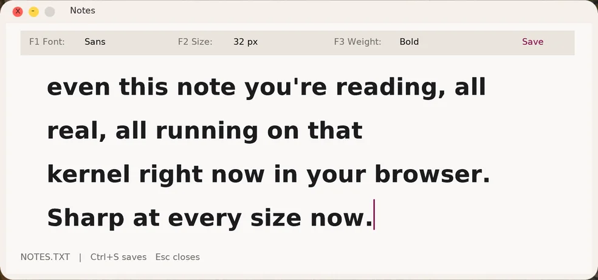
Notes. Six fonts, any size, sharp at every one.
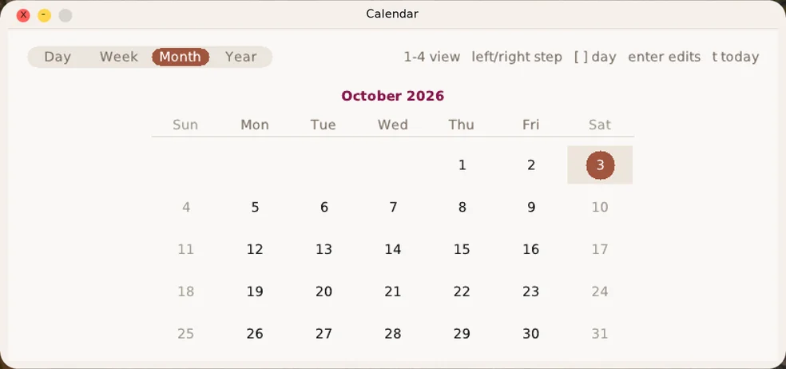
Calendar. See your days and your plans at a glance.
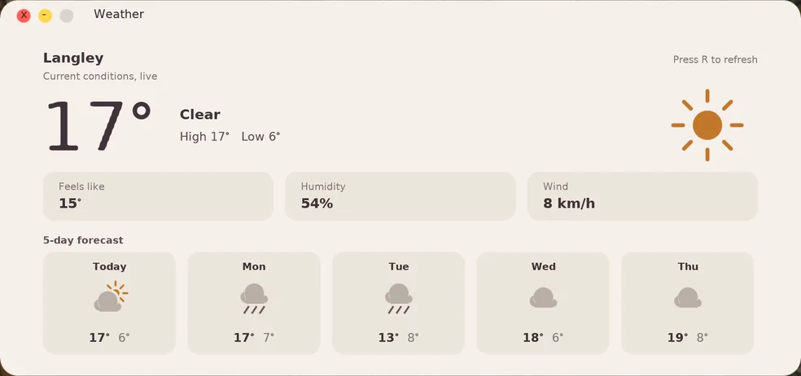
Weather. Know what to wear before you walk out.
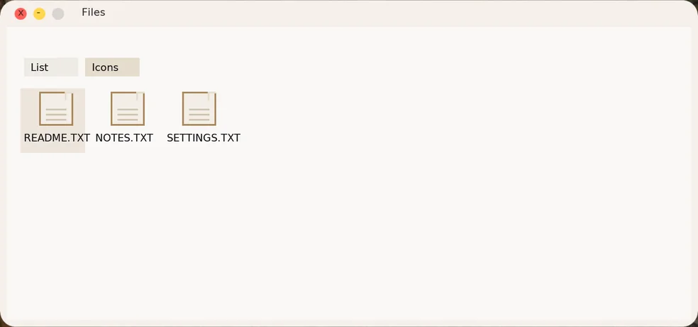
Burrow. Every file on the machine, right where you left it.
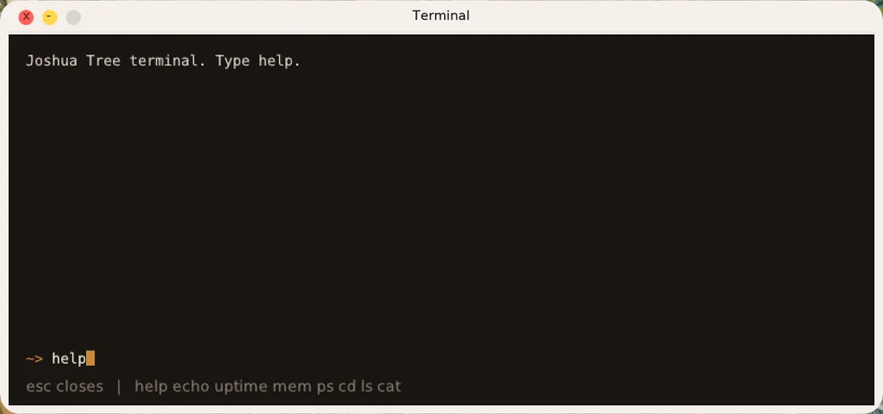
Terminal. Type a command and it answers back.
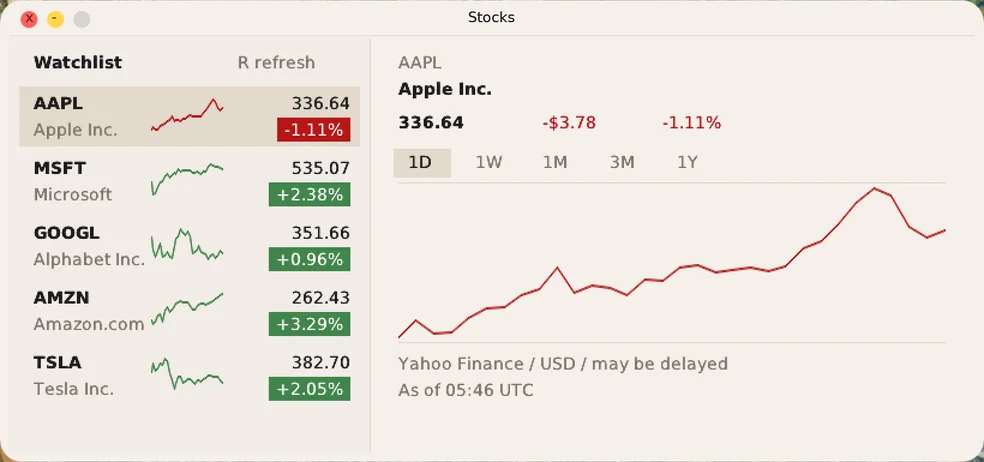
Stocks. Keep an eye on a watchlist without leaving the desktop.
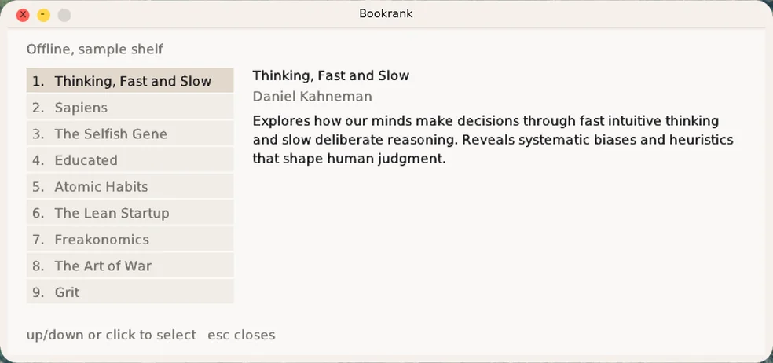
Bookrank. A ranked shelf with a short summary of each book.
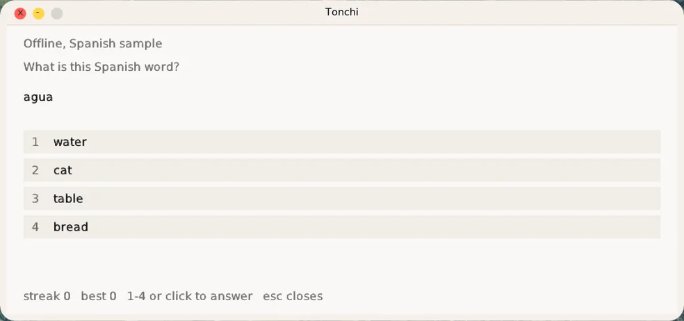
Tonchi. Pick a course, answer a question at a time, keep your streak.
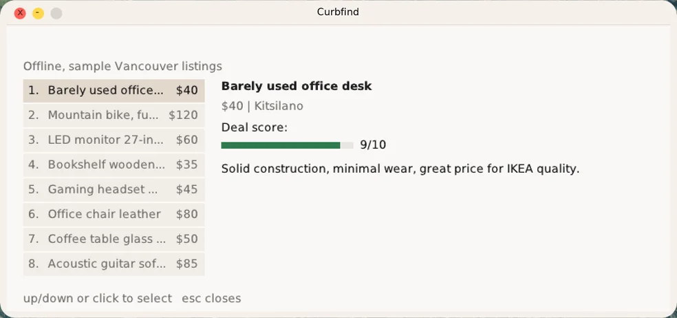
Curbfind. Local listings, each with a deal score.
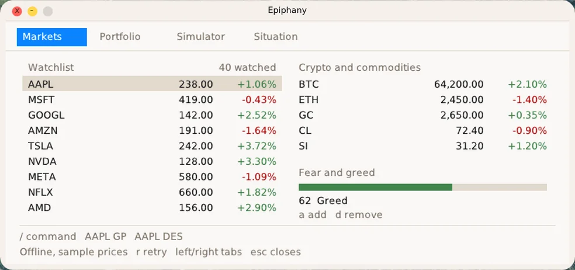
Epiphany. Markets, portfolio and a command bar in one window.
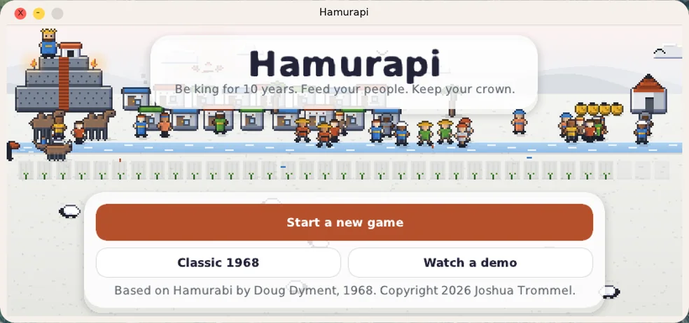
Hamurapi. Be king for ten years, feed your people, keep your crown.
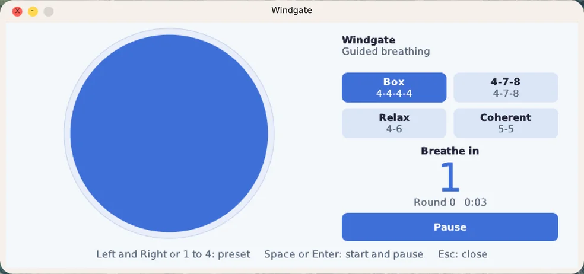
Windgate. A circle to breathe with, four patterns, no account.
One app crashes. The desktop stays up.
Each app runs as its own protected program, walled off from the kernel and from every other app. 30 of the 30 run that way now. Every app is out of the kernel.
Now on a real Raspberry Pi.
The same desktop, on a small board you can hold. One command puts it on an SD card.
The whole desktop. Wallpaper, menu bar, dock and windows, full screen at 1080p.
Plug in a keyboard. USB, any time, even after it boots. The mouse works in the emulator and comes to the board with Bluetooth.
Wi-Fi is waking up. The chip runs and finds the networks around it. Joining one is next.
Claude, inside. Ask Claude Code from the Console. It works in the emulator today, and on the board once Wi-Fi joins.
Tech specs
For the curious. Every number here is measured from the real thing, not promised.
Performance
Fast on nothing.
Measured headless in QEMU on a Mac Mini M4 by tools/bench.sh. Refreshed with every release. Every run, in full.
Architecture
- Kernel
- A freestanding kernel for PCs (i386) and the Raspberry Pi 4 (ARM64). No libc, and no dependencies beyond the toolchain.
- Apps
- 30 built in, 30 of them running as their own protected programs at ring 3.
- Read more
- Architecture · System calls · Threat model
Build
- Toolchain
- Stock clang and
ld.lld, cross-compiling straight to i386. No cross-toolchain to install. - Runs on
- QEMU, a real PC from a USB stick, or a Raspberry Pi 4 from an SD card.
- Commands
makebuildskernel.elf.make runboots it../check.shis the boot test.- Read more
- Testing
Documentation
Every source file has an entry in the architecture guide. Read it.
History
From a blank screen on Aug 31 to 30 apps today.
Next up: a demo that talks you through it, a real computer you can hold, and icons that match.
Want one?
For anyone curious how a computer really works, and for developers who want to help build one.
It already boots on a real Raspberry Pi 4: the full desktop at 1080p, a USB keyboard, and Wi-Fi that finds the networks around it. The dev kit is that board, ready to go. Leave your email, we'll tell you when it ships.
The 30 second version.
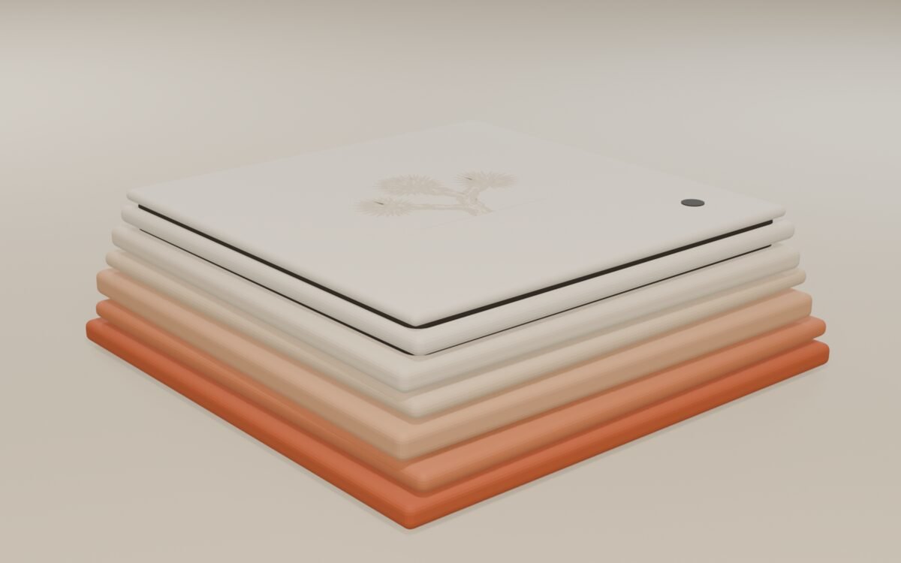
Neo, the case. A concept for now, not for sale yet. See the plans.
Settlers named the Joshua tree for Joshua, arms raised to the sky.
A real computer built from nothing, not a skin on someone else's. 30 apps, Samantha to run them, and now a real Raspberry Pi. Free and open source, named for the tree that survives on nothing.